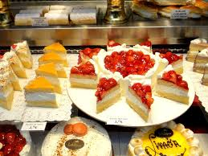

pasteleria rosa
La pasteleria rosa es uno de los mayores vendedores de pan artesanal en el salvador En 2001, La pasteleria fue adquirida por jason M. En 2021, steven N. vendió su participación en La
pasteleria y sus otras marcas centroamericanas a joe Goldberg .

menu
inicio
contacto